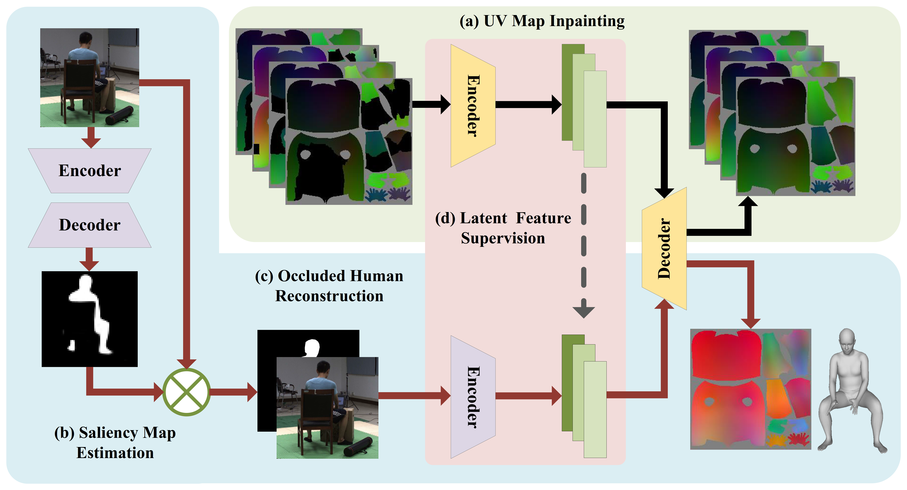
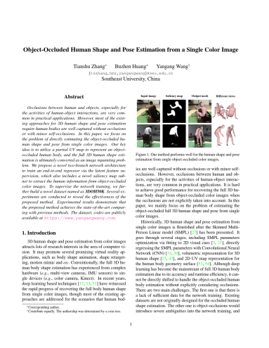

IEEE/CVF Conference on Computer Vision and Pattern Recognition (CVPR), 2020
Object-Occluded Human Shape and Pose Estimation from a Single Color Image

Overview of the proposed two-branch network.
At the training stage, UV map inpainting branch(a) is trained at first. Then, the occluded color image is concatenated with its saliency map(b) and fed to color image encoder(c). The corresponding partial UV map is encoded by fixed inpainting network and used for supervising the color image encoder in latent space(d). At the inference stage, a single color image is passed through the saliency map sub-net(b) and the occluded human reconstruction sub-net(c). The output mesh is directly re-sampled from the UV position map. Abstract
Occlusions between human and objects, especially for the activities of human-object interactions, are very common in practical applications. However, most of the existing approaches for 3D human shape and pose estimation require human bodies are well captured without occlusions or with minor self-occlusions. In this paper, we focus on the problem of directly estimating the object-occluded human shape and pose from single color images. Our key idea is to utilize a partial UV map to represent an object-occluded human body, and the full 3D human shape estimation is ultimately converted as an image inpainting problem. We propose a novel two-branch network architecture to train an end-to-end regressor via the latent feature supervision, which also includes a novel saliency map sub-net to extract the human information from object-occluded color images. To supervise the network training, we further build a novel dataset named as
3DOH50K
. Several experiments are conducted to reveal the effectiveness of the proposed method. Experimental results demonstrate that the proposed method achieves the state-of-the-art comparing with previous methods.Running Code and Trained Model
Here, we release the source code (under Nvidia 1080Ti with CUDA10.1 and cuDNN7.6, Win10). You can directly run the code with the given model.
Source Code Trained Model (extraction code [jhwp])
The rights to copy, distribute, and use the code are being given access to are under the control of Yangang Wang, director of the Vision and Cognition Lab, Southeast University. In this case, credit must be given to: *Object-Occluded Human Shape and Pose Estimation from a Single Color Image*.Any commercial use is not allowed
. I am very glad to receive your feedbacks about this code.
3DOH50K Dataset

3DOH50K
is the first real 3D human dataset for the problem of human reconstruction and pose estimation in occlusion scenarios. It contains 51600 images with accurate 2D pose and 3D pose, SMPL parameters, and binary mask.
The rights to copy, distribute, and use the 3DOH50K dataset (henceforth called "3DOH50K") you are being given access to are under the control of Yangang Wang, director of the Vision and Cognition Lab, Southeast University. You are hereby given permission to copy this data in electronic or hardcopy form for your own scientific use and to distribute it for scientific use to colleagues within your research group. Inclusion of images or video made from this data in a scholarly publication (printed or electronic) is also permitted. In this case, credit must be given to the publication: *Object-Occluded Human Shape and Pose Estimation from a Single Color Image*. For any other use, including distribution outside your research group, written permission is required from Yangang Wang. Any commercial use is not allowed
. Commercial use includes but is not limited to sale of the data, derivatives, replicas, images, or video, inclusion in a product for sale, or inclusion in advertisements (printed or electronic), on commercially-oriented web sites, or in trade shows.
Results

Results on 3DPW (rows 1-2), 3DOH50K (rows 3-4) and Synthetic Human3.6M dataset (rows 5-6).
Materials
|

Related links
|
|
Reference
Tianshu Zhang, Buzhen Huang and Yangang Wang. "Object-Occluded Human Shape and Pose Estimation from a Single Color Image". IEEE/CVF Conference on Computer Vision and Pattern Recognition, (CVPR), 2020.
Acknowledgments: This work was supported in part by National Natural Science Foundation of China (No. 61806054), in part by Natural Science Foundation of Jiangsu Province (No. BK20180355), in part by National Key R&D Program of China (No. 2018YFB1403900), in part by Shenzhen Science and Technology Innovation Committee (STIC) (No. JCYJ20180306174459972) and ""Zhishan Young Scholar" Program of Southeast University.